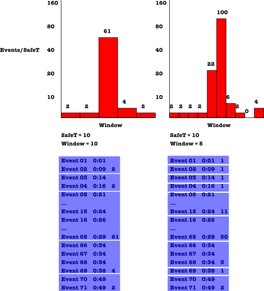

The SNB Driver part 1 post introduced, broadly, the challenges faced when developing a workload driver for the LDBC SNB benchmark. In this blog we’ll drill down deeper into the details of what it means to execute “dependent queries” during benchmark execution, and how this is handled in the driver. First of all, as many driver-specific terms will be used, below is a listing of their definitions. There is no need to read them in detail, it is just there to serve as a point of reference.
Definitions
-
Simulation Time (ST): notion of time created by data generator. All time stamps in the generated data set are in simulation time
-
Real Time (RT): wall clock time
-
Time Compression Ratio: function that maps simulation time to real time, e.g., an offset in combination with a compression ratio. It is a static value, set in driver configuration. Real Time Ratio is reported along with benchmark results, allowing others to recreate the same benchmark
-
Operation: read and/or write
-
Dependencies: operations in this set introduce dependencies in the workload. That is, for every operation in this set there exists at least one other operation (in Dependents) that can not be executed until this operation has been processed
-
Dependents: operations in this set are dependent on at least one other operation (in Dependencies) in the workload
-
Due Time (DueT): point in simulation time at which the execution of an operation should be initiated.
-
Dependent Time (DepT): in addition to Due Time, every operation in Dependents also has a Dependent Time, which corresponds to the Due Time of the operation that it depends on. Dependent Time is always before Due Time. For operations with multiple dependencies Dependent Time is the maximum Due Time of all the operations it depends on.
-
Safe Time (SafeT): time duration.
-
when two operations have a necessary order in time (i.e., dependency) there is at least a SafeT interval between them
-
SafeT is the minimum duration between the Dependency Time and Due Time of any operations in Dependents
-
-
Operation Stream: sequence of operations ordered by Due Time (dependent operations must separated by at least SafeT)
-
Initiated Operations: operations that have started executing but not yet finished
-
Local Completion Time (per driver): point in simulation time behind which there are no uncompleted operationsLocal Completion Time = min(min(Initiated Operations), max(Completed Operations))
-
Global Completion Time (GCT): minimum completion time of all drivers. Once GCT has advanced to the Dependent Time of some operation that operation is safe to execute, i.e., the operations it depends on have all completed executing. Global Completion Time = min(Local Completion Time)
-
Execution Window (Window): a timespan within which all operations can be safely executed
-
All operations satisfying window.startTime <= operation.DueT < window.endTime may be executed
-
Within a window no restrictions on operation ordering or operation execution time are enforced, driver has a freedom of choosing an arbitrary scheduling strategy inside the window
-
To ensure that execution order respects dependencies between operations, window size is bounded by SafeT, such that: 0 < window.duration <= SafeT
-
Window duration is fixed, per operation stream; this is to simplify scheduling and make benchmark runs repeatable
-
Before any operations within a window can start executing it is required that: GCT >= window.startTime - (SafeT - window.duration)
-
All operations within a window must initiate and complete between window start and end times: window.startTime <= operation.initiate < window.endTime and window.startTime <= operation.complete < window.endTime
-
-
Dependency Mode: defines dependencies, constraints on operation execution order
-
Execution Mode: defines how the runtime should execute operations of a given type
Tracking Dependencies
Now, the fun part, making sure dependent operations are executed in the correct order.
Consider that every operation in a workload belongs to none, one, or both of the following sets: Dependencies and Dependents. As mentioned, the driver uses operation time stamps (Due Times) to ensure that dependencies are maintained. It keeps track of the latest point in time behind which every operation has completed. That is, every operation (i.e., dependency) with a Due Time lower or equal to this time is guaranteed to have completed execution. It does this by maintaining a monotonically increasing variable called Global Completion Time (GCT).
Logically, every time the driver (via a database connector) begins execution of an operation from Dependencies that operation is added to Initiated Operations:
- the set of operations that have started executing but not yet finished.
Then, upon completion, the operation is removed from Initiated Operations and added to Completed Operations:
- the set of operations that have started and finished executing.
Using these sets, each driver process maintains its own view of GCT in the following way. Local progress is monitored and managed using a variable called Local Completion Time (LCT):
- the point in time behind which there are no uncompleted operations. No operation in Initiated Operations has a lower or equal Due Time and no operation in Completed Operations has an equal or higher Due Time.
LCT is periodically sent to all other driver processes, which all then (locally) set their view of GCT to the minimum LCT of all driver processes. At this point the driver has two, of the necessary three (third covered shortly), pieces of information required for knowing when to execute an operation:
-
Due Time: point in time at which an operation should be executed, assuming all preconditions (e.g., dependencies) have been fulfilled
-
GCT: every operation (from Dependencies) with a Due Time before this point in time has completed execution
However, with only GCT to track dependencies the driver has no way of knowing when it is safe to execute any particular dependent operation. What GCT communicates is that all dependencies up to some point in time have completed, but whether or not the dependencies for any particular operation are within these completed operations is unknown. The driver would have to wait until GCT has passed the Due Time (because Dependency Time is always lower) of an operation before that operation could be safely executed, which would result in the undesirable outcome of every operation missing its Due Time. The required information is which particular operation in Dependencies does any operation in Dependents depend on. More specifically, the Due Time of this operation. This is referred to as Dependent Time:
- in addition to Due Time, every operation in Dependents also has (read: must have) a Dependent Time, which corresponds to the latest Due Time of all the operations it depends on. Once GCT has advanced beyond the Dependent Time of an operation that operation is safe to execute.
Using these three mechanisms (Due Time, GCT, and Dependent Time) the driver is able to execute operations, while ensuring their dependencies are satisfied beforehand.
Scalable execution in the Presence of Dependencies
The mechanisms introduced in part 1 guarantee that dependency constraints are not violated, but in doing so they unavoidably introduce overhead of communication/synchronization between driver threads/processes. To minimize the negative effects that synchronization has on scalability an additional Execution Mode was introduced (more about Execution Modes will be discussed shortly): Windowed Execution. Windowed Execution has two design goals:
a) make the generated load less ‘bursty’
b) allow the driver to ‘scale’, so when the driver is given more resources (CPUs, servers, etc.) it is able to generate more load.
In the context of Windowed Execution, operations are executed in groups (Windows), where operations are grouped according to their Due Time. Every Window has a Start Time, a Duration, and an End Time, and Windows contain only those operations that have a Due Time between Window.startTime and Window.endTime. Logically, all operations within a Window are executed at the same time, some time within the Window. No guaranty is made regarding exactly when, or in what order, an operation will execute within its Window.
The reasons this approach is correct are as follows:
-
Operations belonging to the Dependencies set are never executed in this manner - the Due Times of Dependencies operations are never modified as this would affect how dependencies are tracked
-
The minimum duration between the Dependency Time and Due Time of any operation in Dependents is known (can be calculated by scanning through workload once), this duration is referred to as Safe Time (SafeT)
-
A window does not start executing until the dependencies of all its operations have been fulfilled. This is ensured by enforcing that window execution does not start until
GCT >= window.startTime - (SafeT - window.duration) = window.endTime - SafeT; that is, the duration between GCT and the end of the window is no longer than SafeT
The advantages of such an execution mode are as follows:
-
As no guarantees are made regarding time or order of operation execution within a Window, GCT no longer needs to be read before the execution of every operation, only before the execution of every window
-
Then, as GCT is read less frequently, it follows that it does not need to be communicated between driver processes as frequently. There is no need or benefit to communicating GCT protocol message more frequently than approximately Window.duration, the side effect of which is reduced network traffic
-
Further, by making no guarantees regarding the order of execution the driver is free to reschedule operations (within Window bounds). The advantage being that operations can be rearranged in such a way as to reduce unwanted bursts of load during execution, which could otherwise occur while synchronizing GCT during demanding workloads. For example, a uniform scheduler may modify operation Due Times to be uniformly distributed across the Window timespan, to ‘smoothen’ the load within a Window.
As with any system, there are trade-offs to this design, particularly regarding Window.duration. The main trade-off is that between ‘workload resolution’ and scalability. Increasing Window.duration reduces synchronization but also reduces the resolution at which the workload definition is followed. That is, the generated workload becomes less like the workload definition. However, as this is both bounded and configurable, it is not a major concern. This issue is illustrated in Figure 1, where the same stream of events is split into two different workloads based on different size of the Window. The workload with Window size 5 (on the right) has better resolution, especially for the ‘bursty’ part of the event stream.

Figure 1. Window scheduling
This design also trades a small amount of repeatability for scalability: as there are no timing or ordering guarantees within a window, two executions of the same window are not guaranteed to be equivalent - ‘what happens in the window stays in the window’. Despite sacrificing this repeatability, the results of operations do not change. No dependency-altering operations occur during the execution of a Window, therefore results for all queries should be equivalent between two executions of the same workload, there is no effect on the expected result for any given operation.